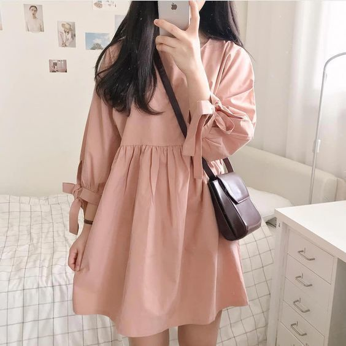
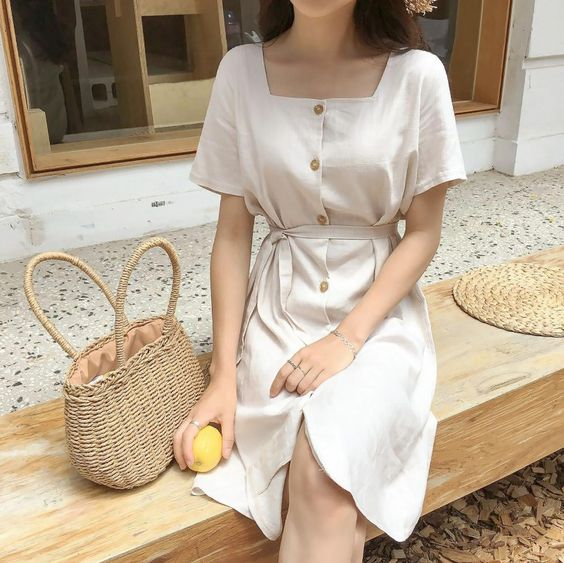
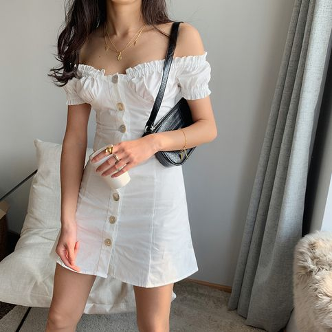
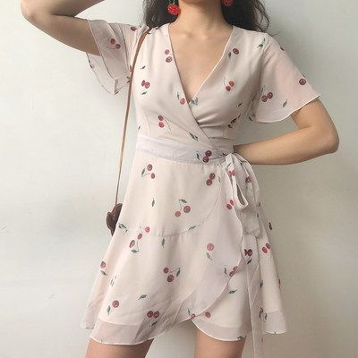
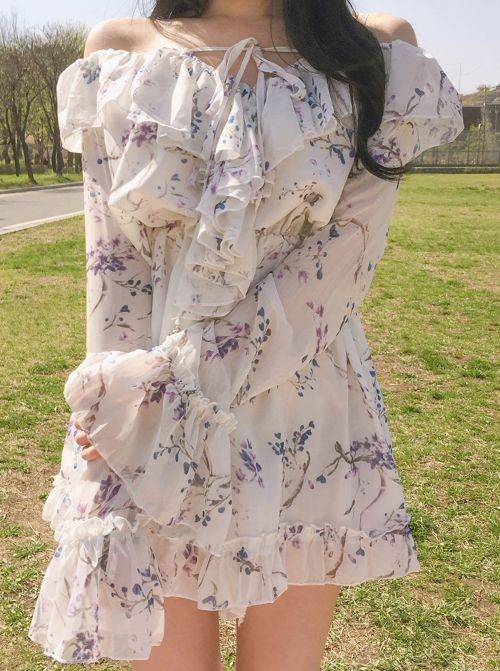
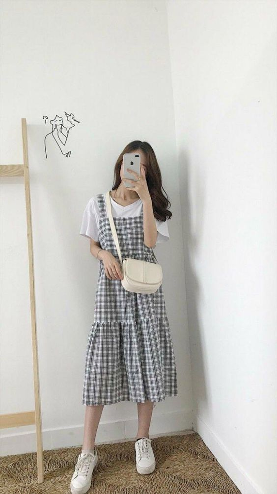
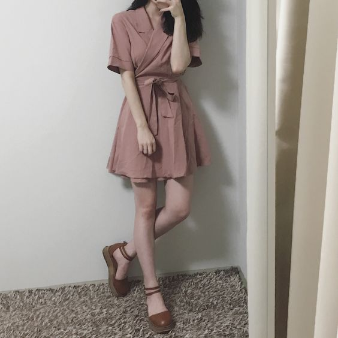
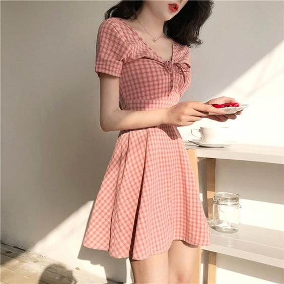
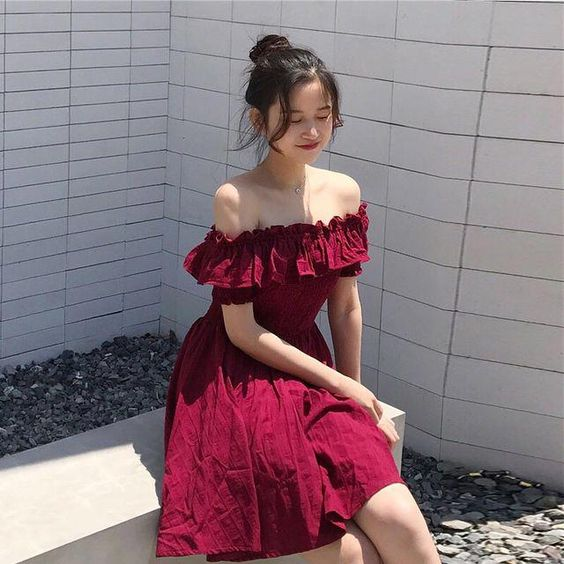
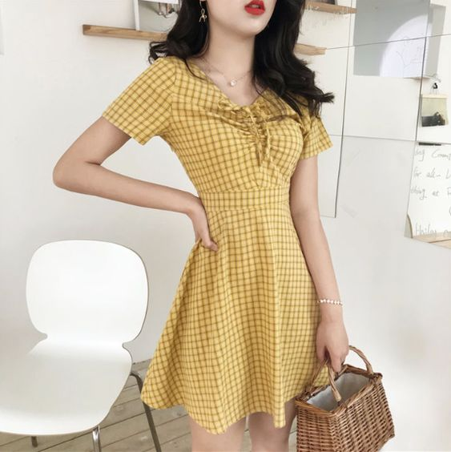

|
 วันนี้เรามาเติมความหวาน ความละมุนให้กับลุคของสาวๆ กันหน่อยดีกว่าเนอะ ด้วยไอเดียแฟชั่นง่ายๆ ตัวเดียวจบ ไม่ต้องมิกซ์แอนด์แมทช์อะไรเยอะแยะ แค่ใส่ชุดนี้ ชิสก็สวยและพร้อมขโมยหัวใจ โอปป้าแล้วค่ะ ****************************  มินิเดรสโทนสีขาว แมทช์เข้ากับรองเท้าแตะแฟชั่นสีดำ กระเป๋าสานใบเล็กแบบถือ ที่น้องวันใสสามารถแต่งตามกันได้เลย เดรสโทนสีขาว สีเบสิคๆ ที่ไม่ว่าคุณจะมัผิวสรอะไร ก็สามารถใส่ได้ แต่งออกมาแล้วได้ลุคที่ดูเรียบหรูมากๆ  มินิเดรสเปิดไหล่โทนสีขาว รองเท้าแตะ ง่ายๆ ชิลล์ๆ แต่แอบสวยหวานและเซ็กซี่เบาๆ ให้ผู้ชายเห็นแล้วใจสั่น  มินิเดรสสไตล์สาวหวาน เดรสโทนสีชมพูอ่อนๆลายเชอร์รี่น่ารักๆ รองเท้าส้นสูงสีดำ ลุคแบบสาวหวาน  มินิเดรสเปิดไหล่ผ่าระบายๆ พลิ้วๆ สวยมาก โทนสีขาวลายดอกไม้ แมทช์เข้ากับรองเท้าแตะง่ายๆ ลุคหวานๆ ที่ดูไม่เลี่ยนแต่สวยแงมากแม่!  เดรสสุดน่ารักโทนสีดำลายสก๊อก ใส่คู่กับถุงเท้าสีขาว รองเท้าผ้าใบ แมทช์กับกระเป๋าสพายข้างสีขาว เป็นลุคแบบไปเรียนพิเศษใสๆ เลย  มินิเดรสโทนสีกระปิ แมทช์เข้ากับรองเท้าคัชชูสีน้ำตาล แต่งแบบนี้ดชก็ดูน่ารักแล้วอะ เป็นลุคที่ใครๆ ก็แต่งตามกันได้ ง่ายมากๆ เลย  มินิเดรสหวานๆ โทนสีโอรสลายตารางสุดน่ารัก แมทช์กับรองเท้าแตะง่ายๆ ชุดนี้คือใส่ไปเที่ยวกับแฟนได้ วันไหนขี้เกียจแต่งตัว ก็แต่งแบบนี้เลย  อีกหนึ่งมินิเดรสเปิดไหล่โทนสีแดงสุดหวาละมุน ชายกระโปรงบานให้ดูพลิ้วๆ รองเท้าแตะแฟชั่นโทนสีดำ เป็นลุคง่ายๆ ที่น่ารักมาก  มินิเดรสแบบรัดรูปสีเหลืองลายตาราง น่ารักมากๆ ดูเป็นสาวหนาวที่แอบเซ็กซี่ แถวไม่แรงจนเกินไปด้วยนะ ใส่ไปเดท ไปเที่ยว ไปถ่ายรูปสวยๆ ได้หมด
|
|
|---|